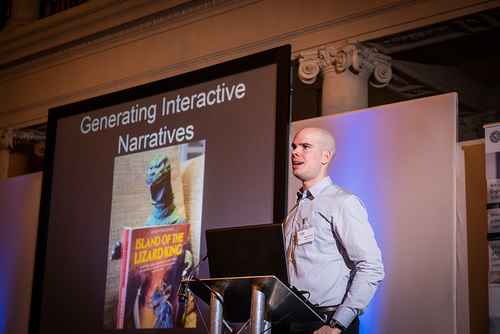

MATT THOMPSON
Interactive narrative researcher

Blog
Papers
Recent:
Telling Non-Linear Stories with Interval Temporal Logic (Pending conference acceptance)
Previous:
- Governing Narrative Events with Institutional Norms (CMN 2015)
- An Interactive, Generative Punch and Judy Show Using Institutions, ASP and Emotional Agents (COIN @ IJCAI 2015)
- An Interactive, Generative Punch and Judy Show Using Institutions, ASP and Emotional Agents (AISB 2015)
- Artfinder: A Faceted Browser for Cross-Cultural Art Discovery (HSWI 2014)
- Effect of Touch Screen Size on Game Immersion (BCS HCI 2012)